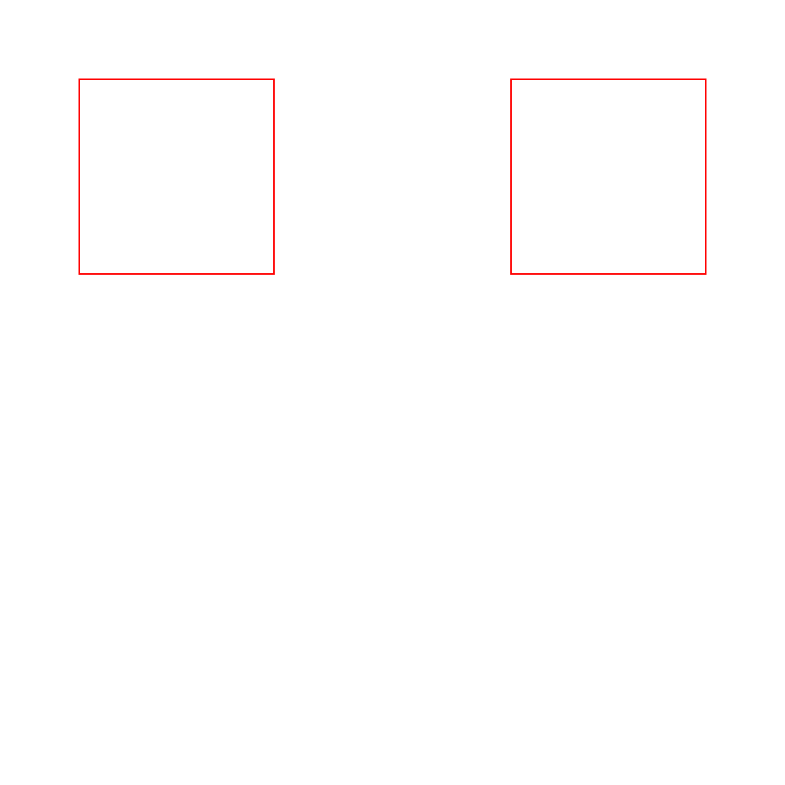
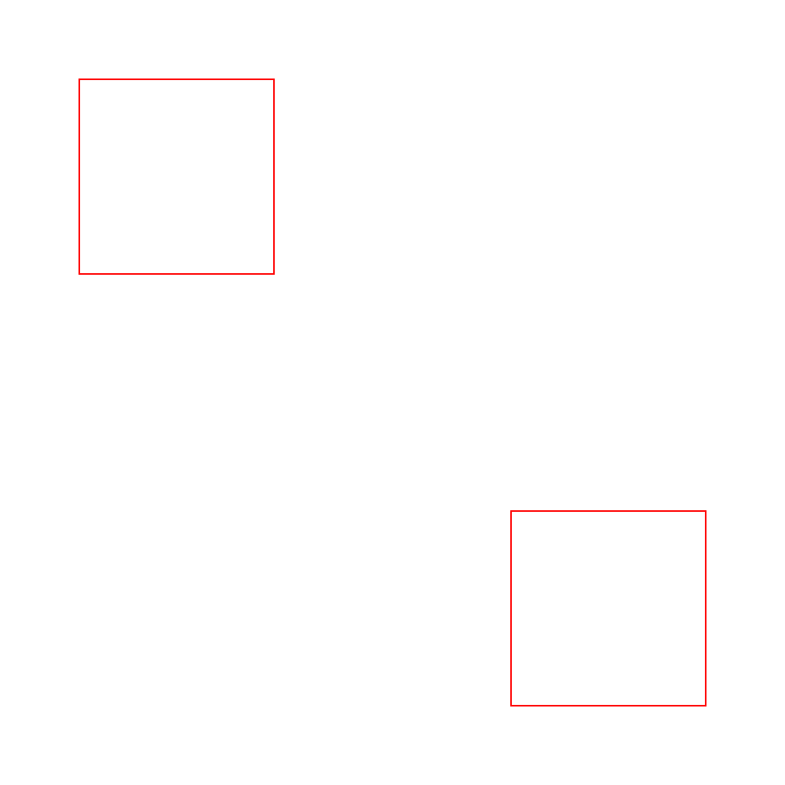

1. Open up Adobe XD.
2. Create a new art board (you can click the custom board to start).
3. For the dimensions of the art board, create one with a width and height of 1000px by 1000px.
4. On the board, select the rectangle option by the left part of the screen (the one that looks like a box) and create a box with a width and height of 250px by 250px.
5. Once the box is made, change the position of the box to be 100px from the top and from the left (you can do this by selecting the box you've made and changing the X and Y values over on the right side to be both 100 and 100).
6. Change the border color to #FF0000 and the size of the border to 2.
7. Create an copy of the box you just made (you can do this by either right clicking the box and selecting copy or by pressing control c and position the X value to be at 650 and the Y value to be the same.
8. Save your artboard and email the exported png to sskowro2@masonlive.gmu.edu.
9. Celebrate your victory!
 